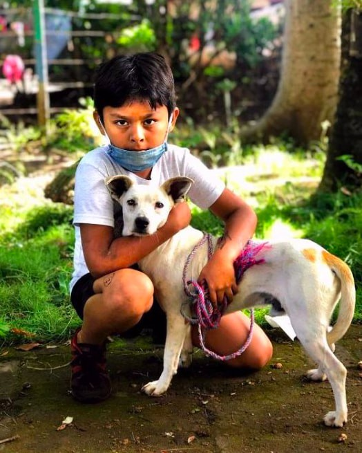

Stray Life Protector aims to reduce the suffering of animals in impoverished regions in india with plans to expand globally. We fund animal shelters and bring service directly into communities in an effort to increase the well-being of pets, strays, working animals, and families alike.By creating long standing partnerships, we tackle animal mistreatment and stray overpopulation at its root.
Moreover, as an animal welfare organization, we are a resoure for animal lovers around the world: we help raise awareness on important issues in animal welfare on our social media and website, and we are striving to become an educational resourse for pet owerns in all parts of the world.
Global Strays provides opportunities for funders, organizations, individuals, and companies to join our movement aimed at helping animals and the people that love them. You can become an ambassador; you can fundraise for us; you can volunteer.
We would love to hear from you